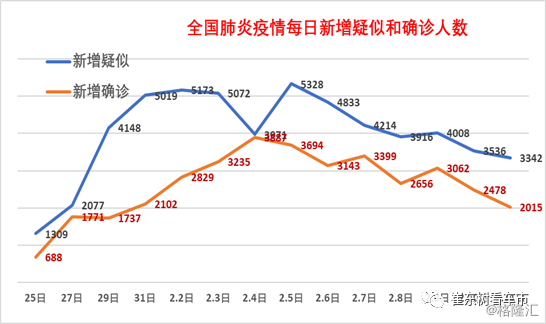

特写|河南信阳本地扩散疫情抬头 确诊加快多项措施并举
原文链接 备份链接 【财新网】（记者 赵宁 方祖望）毗邻湖北随州、孝感，距武汉市区仅两百余公里，河南“南大门”信阳疫情渐趋严峻。截至2月8日24时，信阳确诊病例破两百，达到205例，是河南最严重的地市。信阳已连续9天新增确诊病例超过两位 …

非常时期，武汉成了全国人民挂念、祈福的城市。封城后，武汉人民的真实生活是什么样？
正和岛自1月26日起特别推出《叶青：我在武汉疫区的第N天》专栏。叶青是一位定居武汉40年的市民，也是一名学者和官员。接下来的一段时间，他会用笔记录下亲身经历的、观察到的武汉，为此他还专门外出到大街上、到超市里，获得一手真实的信息。
这将是一份宝贵的史料。感谢他，我们得以更真切地感知到武汉疫情。让我们一起为武汉加油！
作者：叶青 中南财经政法大学教授、博导
湖北省统计局副局长 正和岛蓝色岛邻
来源：正和岛商业洞察

湖北新增确诊病例连续2天下降
11日，正月十八。阴天。
11日，全国新增确诊病例2015例（湖北1638例），新增死亡病例97例（湖北94例，河南、湖南、重庆各1例）。
截至11日，全国确诊病例38800例（其中重症病例8204例），累计治愈出院病例4740例，累计死亡病例1113例，累计报告确诊病例44653例，现有疑似病例16067例。

现在的情况是，湖北省外新增确诊病例连续8天下降，湖北新增确诊病例连续2天下降。
11日，湖北省新增新冠肺炎病例1638例（10日2097例，9日2618例），其中：武汉市1104例、孝感市109例、鄂州市71例。
全省新增死亡94例，其中：武汉市72例、孝感市4例、荆州市4例。
截至11日，湖北省累计报告新冠肺炎病例33366例，其中：武汉市19558例、孝感市2751例、黄冈市2398例、随州市1129例、荆州市1110例、襄阳市1088例。
全省累计死亡1068例，病死率3.20%，其中：潜江市5例、病死率5.56%，武汉市820例、病死率4.19%，荆门市24例、病死率3.45%，天门市10例、病死率3.41%。
目前仍在院治疗26121例，其中：重症5724例、危重症1517例，均在定点医疗机构接受隔离治疗。
除了这些数据之外，我们还要了解以下数据。
11日晚，省疫情防控指挥部最新统计数据显示，当天全国各地12支医疗队共1493名医疗队员抵达湖北。
至11日，国家卫健委、国家中医药管理局、中国红十字会、29个省（自治区、市）、新疆建设兵团、部队医院，共派出178支医疗队、21618名医疗队员支援湖北。其中，国家及各地援鄂医疗队员20218名（含医技人员5405名、护理人员14151名，其他人员662名），解放军部队援鄂医疗队员1400名。
各地到湖北这么多的医护人员，会不会影响当地的力量呢？
上海市卫健委表示：目前上海有937名医务人员在武汉参与防控工作，其中，医师198名，护士644名。上海有医疗机构3853家，医师7.77万人，护士9.71万人，总体来说可以满足上海疫情防控和医疗服务的需求。而这个数字应该是武汉的一倍。

这场疫情4月之前会结束吗？
现在，最权威的声音，是“钟南山的声音”。11日，他的发声，让武汉人再次关心。
11日下午，广东省医疗队武汉前方ICU团队与后方广州医科大学附属第一医院举行远程视频会诊。钟南山院士也应邀参与此次会诊，会诊中途，钟南山院士还接受了路透社的远程采访。在回答关于疫情“拐点”的问题时，钟南山院士表示，现在没有任何人可以做一个严格的拐点预测。
钟南山院士称，通过一个数学的智能分析模型，并结合近日的实际情况进行纠正，再加上现在的气候等等危险因素，以及现在中央对于“早发现，早隔离”政策的强力执行，可以看到现在全国新增病人数量的趋势是在慢慢减少。通过数学模型分析，南方地区在二月份中旬以后，或者说到二月下旬，患病人数应该达到最高峰。4月前可能结束。
这是一个好消息。
这离不开广大省内外、军内外8-9万医护人员的努力。
他们的辛苦与压力是可想而知的。
我们来看一段中国医科大学附属盛京医院第一批支援武汉医疗队队长汪海源的日记：
“不知不觉来武汉已经两个星期了。从刚开始的紧张忙乱、忐忑不安到现在的有条不紊、按部就班，中间经历了很多艰辛。我们克服医疗防护物资缺乏等困难，正在不同的岗位上发挥各自的专业特长，紧张有序地治疗患者，帮助武汉人民战胜疫情，渡过难关！”
感谢他们给武汉人带来的希望。

中央指导组出硬招
“应收尽收是防控新冠肺炎疫情的关键，要把好事办好，怎么能把好事办坏？这些负责转运危重和重症病人的党员干部为什么不跟车？现在的武汉就是战时状态，这些人的行为十分恶劣。”
10日晚，在中央赴湖北指导组约谈会上，国务院副秘书长、国务院办公厅督察室主任高雨的诘问一针见血。
办公桌对面，接受约谈的武昌区区长余松边听边记，脸色通红。
中央指导组要求区政府和街道向这些患者挨个赔礼道歉，对相关责任人根据党纪政纪严肃问责。
再次表明，道歉是一副良药。
事情的起因是，9日晚上，在将确诊还未住院的新冠肺炎重症患者转运至武汉同济医院中法新城院区的过程中，武昌区由于工作滞后、衔接无序、组织混乱，不仅转运车辆条件差，街道和社区工作人员也没有跟车服务，导致重症病人长时间等待继而情绪失控。
随后，中央指导组又先后约谈了武汉市副市长陈邂馨、武汉市洪山区区长林文书。
“我们收集了近期有关应收尽收的问题线索，洪山区有200余条；你们是不是工作不够细，还没做到位？”中央指导组同志约谈洪山区区长林文书时说。
林文书保证：“回去后我们马上对照问题一一整改，补齐短板”。
于是11日，武昌区政府领导来到武汉同济医院中法新城院区重症监护病房，向2月9日晚，因武昌区所辖街道工作人员工作失职，而未能及时妥善安置的重症病人代表当面道歉。同时，责令相关街道负责人逐一对受影响患者电话道歉，对受影响患者家庭也逐一道歉。
早在10日，武汉市新冠肺炎疫情防控指挥部下发“1号令”红头文件，主要是为确保按时完成确诊重症、疑似重症转运工作。其中多项内容似乎与陈一新所提及的前述要求相吻合。
“1号令”内容较为精简，字数约200字。内文具体要求，武汉市领导立即下沉到区、区领导立即下沉到街道、社区一线指挥，强化调度；建立每小时通报制度；在一线考核干部，对完成较好的予以表扬，对未完成的严肃追责。

网民对此大呼满意，有的说：一号令，没有一个字是假话，空话，官话，正确的废话，言简意赅，一目了然，清晰明确，直奔主题！
但是，我觉得除了对完成较好的予以表扬之外，对表现突出的还要予以提拔重用。
天津已经提拔了。天津市委组织部10日发布消息，鉴于张富霞、郭春辉在新冠肺炎疫情防控工作中表现优异，经市委研究拟予以提任。
张富霞，女，1961年6月生，现任天津市卫健委副主任。在疫情防控中主要负责组织开展疫情处置、流行病学调查、实验室检测等工作，拟晋升为一级巡视员职级。
郭春辉，女，1969年6月生，现任天津市发改委经贸处处长、一级调研员。在疫情防控中主要负责协调推动防控物资供应、调配等工作，拟任市政府工作部门副局级领导职务（试用期一年）。
看来女同志干的非常出色。
在此次疫情防控中，天津是较早对局级干部进行问责的省份。1月29日，天津市卫健委二级巡视员王增田，因在新型冠状病毒感染的肺炎疫情防控工作中严重失职失责，造成严重不良影响，被给予留党察看二年处分；由天津市监委给予其政务撤职处分。
在此次疫情防控中，全国首个被公开报道的“火线提拔”发生在湖北。咸宁市崇阳县天城镇四级主任科员罗浩，因疫情防控工作表现突出，被提拔担任天城镇党委委员职务。
在外地的人怎么回武汉？各区都出台了办法。
比如，武昌区发布在外人员返汉流程，规定在外返汉人员到达居住地后，1小时内向所在社区报告，不主动申报、拒绝接受测温、医学观察等防控措施，将依法追究责任。
办理流程：
第一，个人申请。按照一人一表填好申请表。
第二，健康审查。申请表填好后送目前所在地村委会(社区居委会)进行健康审查，经目前所在地县级指挥部批准离开(加盖县指挥部公章)。
第三，社区受理。经武昌居住地所在社区签章同意。
第四，区指挥部审批。
第五，企业组织集中返汉。辖区各类企业因生产需要一次性返汉人数较多的，企业可以集中受理工作人员申请，审核后报区指挥部办理审批手续，企业自行负责接送车辆，组织返汉员工严格执行《在外人员返汉健康须知》。
第六，辖区机关事业单位工作人员返汉。经单位审核同意后，直接报区指挥部办理返汉手续。
目前，武汉已建成14家方舱医院，其中武昌方舱医院、江汉方舱医院、东西湖方舱医院、洪山区职高方舱医院均已启动收治病人。
11日下午2点，汉阳方舱医院也正式启用。该方舱医院设在武汉国际博览中心，最大规模可以同时容纳6000名确诊轻症患者。
塔子湖方舱医院、光谷科技会展中心方舱医院、黄陂一中方舱医院等其他方舱医院均在紧急准备中，一旦具备接受条件将立即启用。
好消息是，11日，武汉首批34位新冠肺炎患者从江汉、武昌方舱医院顺利出院。
在武汉之外，有两件事值得一提。
从9日起，湖北十堰房县实施奖励计划，规定从9日至18日，凡自愿到县、乡指定医院就诊的发热病人，可奖励1000元，发热病人经乡、村、组干部调查或群众核实后，可奖励500元。
9日，48名发烧病人前去就诊。
10日上午，又有30人去看医生。
看来效果非常显著。
但一些专家认为，这种用现金奖励患者主动就医的方式违背了我国现行法律要求，不利于公众树立责任感。
而房县的同志认为，出台激励政策是为了调动潜在案例的积极性。另一方面，现金奖励也可以减轻病人的负担。
高速公路服务区怎么成为批发市场？在非常时期，也只能这么做了。
近日，湖北省仙桃市在孝仙嘉高速公路仙桃南服务区设立医用防护用品临时交易点，有81家疫情防控物资生产企业的医用防护用品在此交易。截至10日晚，这一临时交易点累计参与交易的车辆231台次，交易金额2.6亿元，主要以口罩、防护服等医用防护用品为主。
仙桃市是全国最大的无纺布卫材加工出口基地，拥有无纺布制品企业数百家。

如果消毒机器人联网，效果会怎么样？
11日，武汉市第六医院第一台消毒机器人在呼吸内科13隔离病区投入使用，可以对物体表面、空气等进行消毒，病毒杀菌效果高达99%以上，大大提高了医院感染防控成效。

疫情暴发后上海钛米机器人科技有限公司收到上海市经济和信息化委员会的《生产能力应急征用通知》。
目前，在抗击疫情采购的医疗器械类物资中，国内只有钛米机器人一家企业可以提供消毒机器人、隔离病房服务机器人。
但是，由于企业规模比较有限，交行很快给予企业2000万元信用贷款，且给予最优惠利率。
目前，已有几十台钛米机器人驰援武汉防疫一线，机器人不仅可识别医院内部的整体环境给出最优消毒路径，还可以在消毒过程中可自动识别人和物体并对感染特别严重区域进行重点消毒，极大地提高了医院日常消毒的效率，将二次感染的概率降到最低，为医护人员缓解后顾之忧。
这是一个好东西，而且可以移动。真正派上了用场。
我们假设一下，如果将来医院、机场、商场、火车站、汽车站、码头、行政中心、人群聚集区、家庭等都使用科技含量越来越高的消毒机器人，并且加以联网，通过大数据分析，达到预警的效果，是不是很好呢？
我想，生产空气清新器的企业，应该是升格为生产消毒机器人的时候了。这是不是一个商机？
经过这次新冠肺炎，中国的大健康产业会得到快速的发展。

小结
制度不是挂在墙上的，重在落地。
中央指导组的力量增强。问责的能力也增强了。
“应收尽收，不漏一人”在推进。
很明显，网络上的声音小多了。
希望3月底能够结束战斗。当然，越早越好。
如果“早发现，早隔离”，哪有这么多的麻烦。
原文链接 备份链接 【财新网】（记者 赵宁 方祖望）毗邻湖北随州、孝感，距武汉市区仅两百余公里，河南“南大门”信阳疫情渐趋严峻。截至2月8日24时，信阳确诊病例破两百，达到205例，是河南最严重的地市。信阳已连续9天新增确诊病例超过两位 …
原文链接 备份链接 【财新网】（记者 黄蕙昭 综合）武汉“封城”距今已有半月，疫情正呈现城市向农村蔓延、输入型向社区感染型发展的新态势。随着武汉周边地市疫情防控的严峻形势浮出水面，“湖北不止一个武汉”成舆论诉求；疫情艰难攻坚时期，如何避 …
原文链接 备份链接 非常时期，武汉成了全国人民挂念、祈福的城市。封城后，武汉人民的真实生活是什么样？ 正和岛自1月26日起特别推出《叶青：我在武汉疫区的第N天》专栏。叶青是一位定居武汉40年的市民，也是一名学者和官员。接下来的一段时间，他 …
原文链接 备份链接 1月30日，曾患新型冠状病毒感染的肺炎的北京大学第一医院呼吸和危重症医学科主任王广发在北京地坛医院治愈出院。他是北京市第5名治愈出院的新型冠状病毒感染的肺炎患者。新华社发（任超 摄） 采访·整理 秦珍子 编辑 张国 国 …
原文链接 备份链接 非常时期，武汉成了全国人民挂念、祈福的城市。封城后，武汉人民的真实生活是什么样？ 正和岛自1月26日起特别推出《叶青：我在武汉疫区的第N天》专栏。叶青是一位定居武汉40年的市民，也是一名学者和官员。接下来的一段时间，他 …